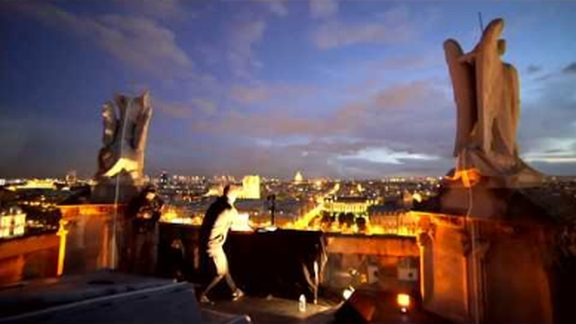
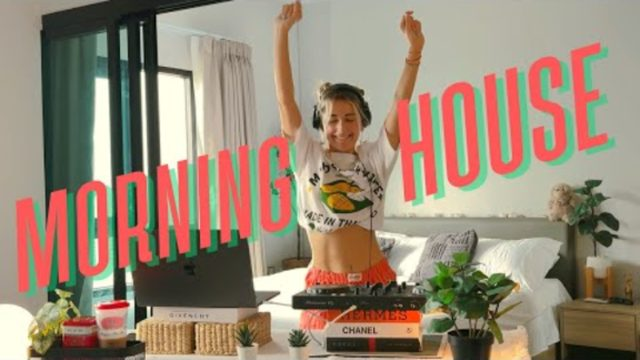
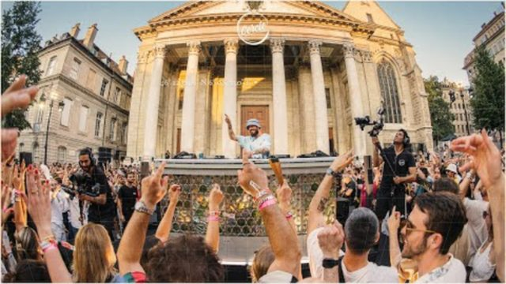

N° 001 — Latest upload
HÖR × Sennheiser Livingroom, Amsterdam
- Uploaded
- 21.10.26
- Length
- 56:46
- Channel
- HÖR Berlin
- Genre
- Melodic techno · Live act

NTO


01
 Paul Kalkbrenner @ PM Open Air Buenos Aires
Paul Kalkbrenner · Argentina · 2:26:04
Views14.3M
02
Paul Kalkbrenner @ PM Open Air Buenos Aires
Paul Kalkbrenner · Argentina · 2:26:04
Views14.3M
02
 The Blaze live at Cercle Odyssey, Mexico City
The Blaze · Mexico · 1:29:38
Views2.4M
06
The Blaze live at Cercle Odyssey, Mexico City
The Blaze · Mexico · 1:29:38
Views2.4M
06
 Paul Kalkbrenner @ Sónar Lisboa 2024
Paul Kalkbrenner · Portugal · 1:59:21
Views2.0M
Paul Kalkbrenner @ Sónar Lisboa 2024
Paul Kalkbrenner · Portugal · 1:59:21
Views2.0M
Paul Kalkbrenner @ PM Open Air Buenos Aires
Paul Kalkbrenner · Argentina · 2:26:04
Views14.3M
02

N'to live @ Tour Saint-Jacques, Paris, for Cercle NTO · France · 1:25:40 Views4.4M 03
Good Vibes & Groovy Morning House Mix Val Baker · Bangkok · 27:39 Views3.7M 04
Folamour at Cathédrale Saint-Pierre, Geneva, for Cercle Folamour · Switzerland · 1:53:43 Views3.2M 05
The Blaze live at Cercle Odyssey, Mexico City
The Blaze · Mexico · 1:29:38
Views2.4M
06
Paul Kalkbrenner @ Sónar Lisboa 2024
Paul Kalkbrenner · Portugal · 1:59:21
Views2.0M
By genre
(10)
Advertisement · 970 × 250